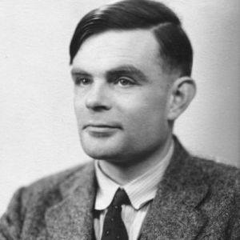
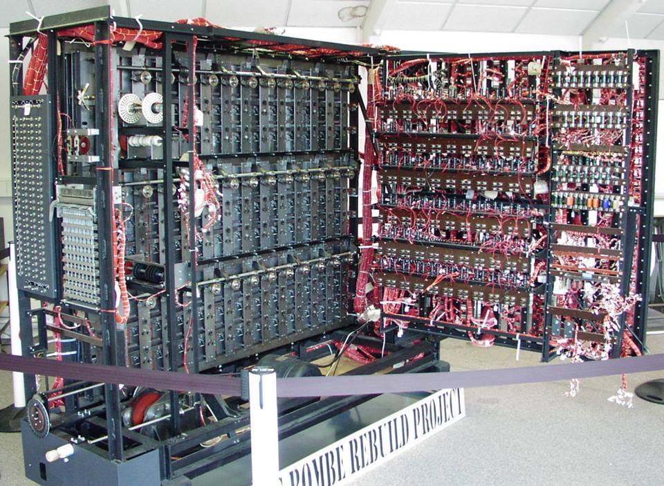

ALAN TURING
|
Alan Mathison Turing (23 Haziran 1912 – 7 Haziran 1954), Ýngiliz matematikçi,
bilgisayar bilimcisi ve II.Dünya Savaþý[2] sýrasýnda Alman þifrelerinin kýrýlmasýnda çok önemli bir rol oynadýðý
için savaþ |
 |
|
Adý ayrýca Princeton'da beraber çalýþtýðý tez hocasý Alonzo Church ile geliþtirdiði
Church-Turing Hipotezi ile de 1952 yýlýnda þantaja maruz kaldýðý þikayetiyle polise baþvurup eþcinsel olduðunu
açýklayan Turing, eþcinsellik |
 |
|
Adý anýsýna verilen ve bilgisayar biliminin Nobel'i[3] sayýlan Turing Ödülü ile de
akademik biliþim Geliþim biyolojisi alanýndaki en önemli matematiksel modellerden biri olan
reaksiyon-difüzyon modeli de |

|
Kaynak
|